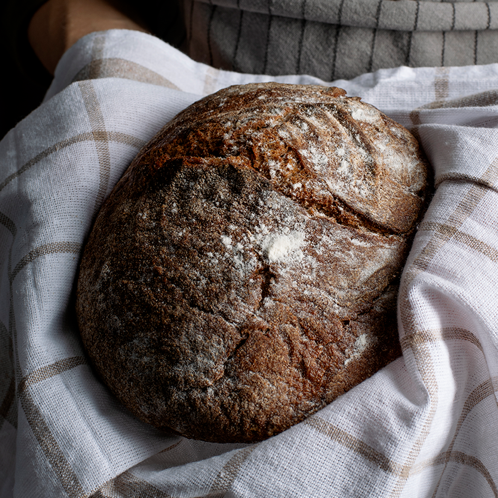

Fresh Breads, Pastries, and Cakes
Browse North Star Bakery favorites and save items you may want to order. Use the category selector to focus on a type of baked good.
Your Bakery Favorites (0)
Save items for later. Your favorites are remembered in this browser.
- No favorites saved yet.
